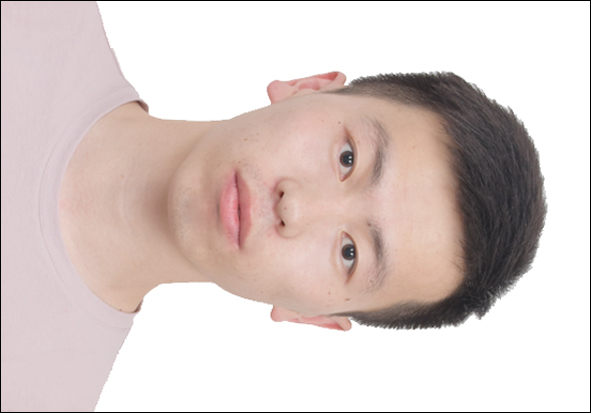
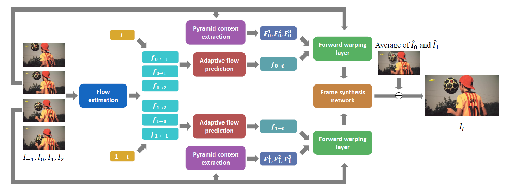
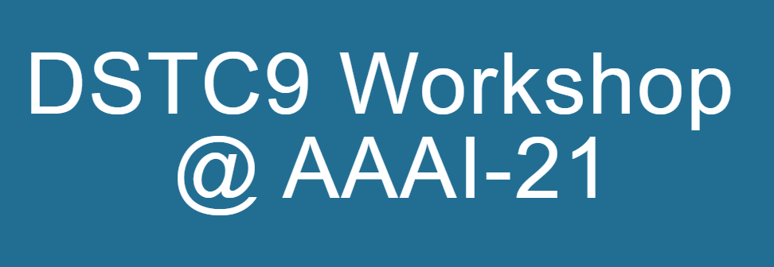

Jinbo Xing (邢金波)Ph.D. student
Dept. of Computer Science and Engineering 


|
 |
Biography
I am currently a first-year Ph.D student in the Department of Computer Science and Engineering, The Chinese University of Hong Kong, supervised by Prof. WONG, Tien-Tsin. Previously, I received my B.Sc. and M.Sc. degrees in Computer Science from the Department of Computer Science and Engineering, The Chinese University of Hong Kong in 2020 and 2021 respectively.
My research interests include computer graphics and computer vision.
News
- [01/2021] One paper on video frame interpolation was accepted by Computational Visual Media Conference 2021.
Publications
|  | Flow-aware Synthesis: A Generic Motion Model for Video Frame Interpolation. Jinbo Xing*, Wenbo Hu*, Yuechen Zhang, Tien-Tsin Wong. Computational Visual Media (CVM), Springer, 2021. [paper][Code] |
|  | Unstructured Knowledge Access in Task-oriented Dialog Modeling using Language Inference, Knowledge Retrieval and Knowledge-Integrative Response Generation. Mudit Chaudhary, Borislav Dzodzo, Sida Huang, Chun Hei Lo, Mingzhi Lyu, Lun Yiu Nie, Jinbo Xing, Tianhua Zhang, Xiaoying Zhang, Jingyan Zhou, Hong Cheng, Wai Lam, Helen Meng. AAAI Conference on Artificial Intelligence Workshop Program(AAAIW), DSTC9, 2021. [paper][Paper Reading][Code] |
© Jinbo Xing | Last updated: Aug. 2021